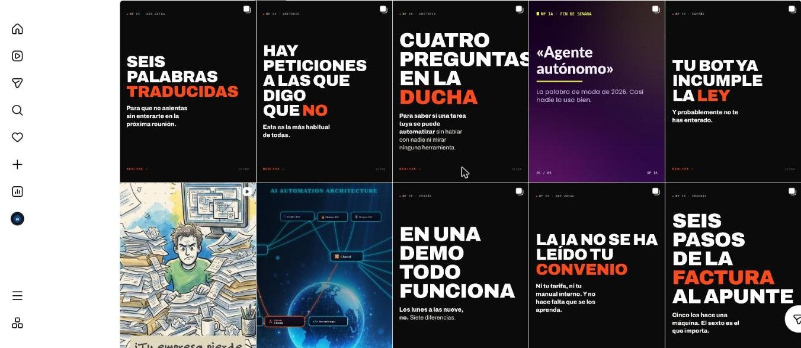
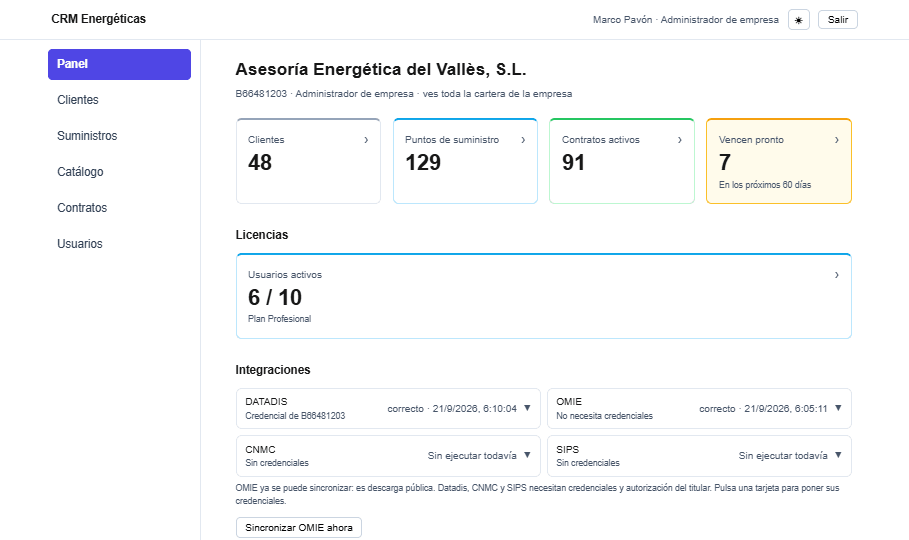
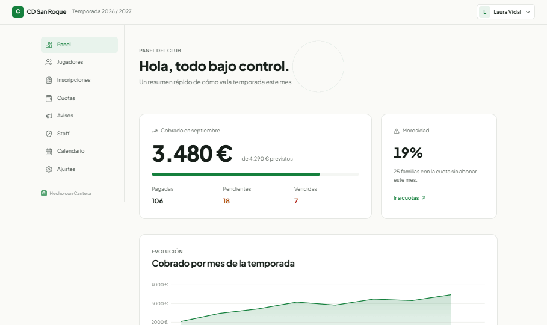

Correos que nadie clasifica
Llegan mezclados con todo lo demás y alguien tiene que leerlos uno a uno para saber qué es urgente.
Automatización e IA para pymes · Barcelona
Yo las encuentro y las automatizo: correos que nadie clasifica, citas por WhatsApp, facturas a mano. Sistemas que quedan en tu propia cuenta, no en la mía.
Sin compromiso. Si tu caso no da para automatizar, te lo digo en la propia llamada.
¿Te suena?
Llegan mezclados con todo lo demás y alguien tiene que leerlos uno a uno para saber qué es urgente.
Cada cambio de hora es un mensaje más, y siempre hay uno que se pierde en la conversación.
Copiar importes y conceptos de un PDF a tu programa, factura a factura, cada semana.
El cliente pregunta a las 23:40 y hasta el lunes no hay quien conteste.
Sabes que hay que publicar, pero entre el día a día nunca llega el momento.
Si esa persona falta un día, el proceso se para con ella.
¿Te has visto en dos o más? Son horas de tu equipo que se pueden recuperar cada semana.
Calcula cuántasQué hago
El primer trabajo es diagnosticar el proceso real, no vender un agente. Esto es lo que suelo encontrarme, de menos a más complejo.
Conecto los programas que ya usas —correo, agenda, facturación, CRM— para que se pasen datos solos, con reglas fijas. Sin modelo de por medio: más barato, más rápido y sin margen de invención.
Ejemplo: cuando entra una reserva en la web, se crea sola en la agenda y se manda la confirmación.
Cuando la entrada es texto libre —un correo, una factura escaneada— un modelo lee, entiende y saca los datos que hacen falta.
Ejemplo: la factura que llega por correo se lee sola y sus datos entran ya clasificados en tu programa de contabilidad.
El sistema busca el fragmento exacto de tu documentación —catálogo, normativa interna, preguntas frecuentes— y responde citando de dónde lo ha sacado. No improvisa.
Ejemplo: un cliente pregunta un plazo por WhatsApp y el sistema responde consultando tu propio manual, no de memoria.
Además de responder, el sistema escribe en tu CRM, agenda una cita o clasifica un caso. Con un límite de intentos, una comprobación antes de dar la respuesta por buena, y una persona que entra si la confianza no es suficiente.
Ejemplo: el que ves más abajo, en la demo.
Automatización en marcha
Cada día mis publicaciones de Instagram salen solas. Si el disparador principal se retrasa, este flujo lo rescata y solo entonces avisa por correo. Dale a «Ver el recorrido» o toca cualquier paso.
Cada día a las 19:15 se comprueba si la pieza de hoy ya salió en Instagram.
Consulta el registro de publicaciones del día en GitHub.
Consulta qué pieza tocaba publicar hoy.
Compara ambos: si el disparador principal ya publicó, no hace nada.
Lanza el mismo flujo de publicación, como si fuera el disparador principal.
Espera a que la publicación tenga tiempo de completarse.
Vuelve a mirar el registro: no da por bueno un aviso sin comprobarlo.
Solo si el registro cambió de verdad se considera un rescate real.
Un correo distinto según lo que pasó: rescatado, fallo de GitHub, o arrancó y no publicó nada.
Pulsa «Ver el recorrido» para seguir el flujo paso a paso.
Demostración con datos de ejemplo
Elige una pregunta como la haría un cliente por WhatsApp y mira qué hace el agente antes de contestar.
Mira el expediente del cliente y la agenda del despacho. No responde de memoria.
Contesta con datos concretos y propone una cita con la persona que toca.
Si el caso necesita criterio profesional, se lo pasa a un asesor con todo el contexto.
Toca una pregunta
Conversación de ejemplo. En tu caso, el agente consulta tu propio expediente y tu propia agenda.
Antes de hablar
Pon tus propios números. Son solo para orientarte: la cifra real sale del diagnóstico, no de una calculadora.
Cálculo orientativo (horas × personas × 47 semanas laborables). No es una oferta ni un ahorro garantizado.
Proyectos realizados
Cada pieza se construyó para un proceso concreto de un negocio concreto. Lo que es demostración va rotulado como tal.

Calendario, publicación automática y un flujo de respaldo que comprueba que de verdad se publicó antes de avisar.
Ver el sistema →
Carteras, facturas auditadas y comisiones calculadas solas para varias empresas a la vez.
Ver el sistema →
Cuotas, morosidad y documentación con caducidad, en un panel que usa gente sin perfil técnico.
Ver el sistema →Para quién
Aplica a cualquier negocio con un proceso manual identificable. Estos son los sectores donde más lo he visto.
Correos, documentación y plazos que se acumulan cada trimestre.
Citas, recordatorios y llamadas que llegan fuera de horario.
Reservas, carta y reseñas gestionadas sin depender de una sola persona.
Cuotas, inscripciones y comunicación con las familias.
Inversión
Se sube de nivel cuando el negocio lo necesita, no el primer día. Los rangos son orientativos: el precio final depende del alcance específico de tu proyecto. Cada presupuesto se cierra por escrito antes de empezar.
| Nivel | Qué es | Rango |
|---|---|---|
| 0 | Diagnóstico del proceso | Gratuito — 300 € |
| 1 | Automatización sin IA | 400 — 900 € |
| 2 | Clasificación o extracción con un modelo | 700 — 1.800 € |
| 3 | Agente con documentos | 1.500 — 3.500 € |
| 4 | Agente con acciones | 2.500 — 6.000 € |
| 5 | Orquestador con subagentes | Desde 5.000 € |
Mantenimiento opcional según criticidad: 80 — 200 €/mes
Cómo trabajo
20 minutos para entender el proceso real, sin compromiso.
El proceso, dónde se pierden horas y el retorno estimado. De pago, descontable si seguimos.
Qué se automatiza, qué nivel aplica y qué queda fuera, por escrito antes de empezar.
Con una batería de casos de prueba antes de que el sistema toque un solo dato real.
Todo queda en tu cuenta, con formación a quien lo vaya a usar.
Quién está detrás
Trabajo solo, con apoyo externo puntual. Vengo de años en integración de sistemas y telecomunicaciones antes de dedicarme a la automatización con IA: sé lo que es que algo falle un sábado y no haya nadie para arreglarlo, así que construyo para que eso no pase.
La tecnología está al alcance de cualquiera. Lo que decide el resultado es el criterio: qué se automatiza primero, qué no se toca, y qué hace el sistema cuando no está seguro.
Si no te hace falta un agente de IA, te lo digo en la propia llamada.
Tus datos, seguros
Cuando el sistema trata datos de tus propios clientes, esto no es un anexo: condiciona cómo se construye desde el primer día.
Conforme al artículo 28 del RGPD, firmado antes de que el sistema acceda a un solo dato personal.
El sistema accede a los campos que necesita para su tarea, nunca a la base de datos completa.
Cada decisión automática queda registrada, con un plazo de conservación definido.
Las decisiones con consecuencias para alguien se escalan, no se automatizan sin revisión.
Preguntas frecuentes
Pulsa «Descubre» en cada una.
Depende del nivel. Una automatización sin IA puede estar en marcha en días; un agente con acciones necesita su batería de pruebas antes de tocar datos reales.
Con indicadores de tu propio negocio: horas por proceso, errores manuales, tiempo de respuesta al cliente. Se mide antes de construir, en el diagnóstico.
La forma en que está construido: busca el documento real antes de responder, comprueba que la respuesta tiene el formato esperado, y pasa el caso a una persona cuando no está seguro.
Queda documentado en tu cuenta, así que puede mantenerlo tu equipo, otro proveedor, o yo mismo con la cuota de mantenimiento opcional.
El sistema nunca toca tus programas directamente: hay una capa intermedia controlada donde se fijan los límites de lo que puede leer y escribir.
Es justo lo que recomiendo: un solo proceso con retorno medible, y ampliar después sobre una base que ya funciona.
Contacto
El primer paso es una llamada breve, sin coste ni compromiso, para ver si hay un proceso con retorno suficiente para automatizarlo.